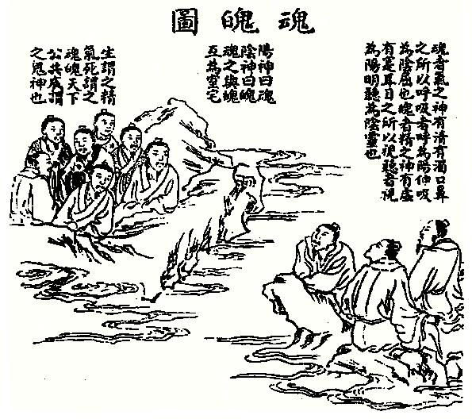

三魂七魄
【名称】三魂七魄
【解释】魂：旧指能离开人体而存在的精神；魄：旧指依附形体而显现的精神。道家语，称人身有“三魂七魄”。
【出处】《抱朴子·地真》：“欲得通神，宜水火水形分，形分则自见其身中之三魂七魄。”
道家对人体中魂魄的总称。
据《云笈七签》卷五四“魂神部”称，人身有三魂七魄：
三魂一名胎光，太清阳和之气，属于天；
二名爽灵，阴气之变，属于五行；
三名幽精，阴气之杂，属于地。
胎光主生命，久居人身则可使入神清气爽，益寿延年；
爽灵主财禄，能使明气制阳，使人机谋万物，劳役百神，生祸若害；
幽精主灾衰，使人好色嗜欲，溺于秽乱之思，耗损精华，神气缺少，肾气不足，脾胃五脉不通，旦夕形若尸卧。
七魄之名，分别为尸狗、伏矢、雀阴、吞贱、非毒、除秽、臭肺。七魄为人身中之浊鬼，每每于月朔、月望、月晦之夕在人身中流荡游走，招邪致恶。修道之人，应制御七魄。如正卧，去枕伸足，搓手；次掩两耳，指端相接，交于头顶中，闭夏七通，存想白气临身，化作天兽，青龙在目，白虎伏鼻，玉女当耳，龟蛇守足，乃咽液七过，叩齿七通，呼七魄名，咒念七魄内闭相守，不得妄动。宋俞琰《席上腐谈》卷上：“医家谓肝属东方木而藏魂，肺属西方金而藏魄，道家乃有三魂七魄之说。魂果有三，魄果有七乎?非也，盖九宫数以三居左；七居右也。白玉蟾三龙四虎之说亦犹是，盖《太玄》以三为木，四为金也。”
人要死时七魄先散，然后三魂再离。 
人的精神分而可以称之为魂魄，其魂有三，一为天魂，二为地魂，三为命魂。其魄有七，一魄天冲，二魄灵慧，三魄为气，四魄为力，五魄中枢，六魄为精，七魄为英。
魂为阴，魄为阳。其中三魂和七魄当中，又各另分阴阳。三魂之中。天魂为阳，地魂为阴，命魂又为阳。七魄中天冲灵慧二魄为阴为天魄，气魄力魄中枢魄为阳为人魄，精英二魄为阳为地魄。
人的命魂，透过七魄中的天冲灵慧魄主思想，主智慧。透过气力二魄和中枢魄，主行动。通过精英二魄主身体主强健。唯中枢一魄，乃为七魄的中心。人的命魂就依附于七个脉轮之上。
人身中命魂与中枢魄的联系最为密切，所以中枢魄也称为命魄，在人体内部，天冲灵慧二天魄之阴，与精英二地魄之阳交，而产生人魄有形之气力。在人身外部，则是因天魂之阳，与地魂之阴交合，成命魂。并同时三魂相合，主人无形的命运。运是由人的天地二魂联合，主人命的好坏和强弱。命则是人的命魂，支持自身的天地二魂，运发的旺盛与兴衰。运由命所主，命由运所发。运无形而命有形，运与命复合，则构成人类完整的生命体。
运主虚空，命主实相。凡人命运的好坏，在于人的命与运是否生合或者相制约。若是运强过了命，不去生扶自己的命，并反而压制命，则人身七魄的天魄地魄人魄也必不相生。此人必表现为命薄和体弱。若得命强过运。而能使得运不得不去生扶自己的命。则人身七魄之天魄地魄人魄必得相生合。人就会表现得身强命旺，人的根基必深而厚，此等行者，修行才易于成功。
命魂乃七魄之根本，七魄乃命魂的枝叶。魄无命不生，命无魄不旺。命魂是人身的主魂。天地二魂的聚合产生命魂而生人，命魂终结时又分出阴阳。并回归天地。天魂主光，地魂则是天魂的光照射在人命魂之上所形成的影子。所以地魂又称为影魂。无光不成影，无影不成相。修行人若能修得命运融合，天光与地相才能与人的色魂相合。如此人体眉心的灵慧之魄，才能得以显现出天魂地魂的形象。如此人的天地二魂常在外而所见的一切相，才能得以在人的大脑和天眼里显示出来。因为天魂和地魂既能依附与肉身而显化万象，也能脱离肉身而自由存在，所以人的天魂和地魂也称为身外化身。
古书记载
古人认为人身上有三魂七魄，也有说三魂六魄的，三魂又叫三精。这种说法来源于道家，如道书《云笈七签》云：“夫人有三魂，一名胎光，一名爽灵，一名幽精。”七魄是：尸狗、伏矢、雀阴、吞贼、非毒、除秽、臭肺，皆“身中之浊鬼也”。
《玄怪录》载三魂七魄故事，唐元和五年五月，司戎郎崔宣子崔环病中被两黄衫带到阴间判官院受刑。崔环站判官院外，忽听到四声以杖击人声音，旋有阴吏出来对崔环传话：今且宽恕，只将你轻杖四板放归。崔环说：“此身不入，何以受刑？”阴吏说：“凡人有三魂，一魂在家，二魂受杖耳。不信，看郎胫合有杖痕？”崔环拉起衣一看，两胫上果然各有四条杖痕，且痛苦不堪，不能举足，只能匍匐而行。
清袁枚《续子不语》亦载：杭州风俗，新娘子过嫁时须手执宝瓶，内盛五古，入男家门后交换，然后放在米柜中。某日，一梁氏新娘执宝瓶过城门时，因守门人索钱吵闹受惊，随即精神恍惚。后喝一碗符水，才神魂稍定，乃对人说：“我有三魂，一魂失落于城门外，一魂失落于宝瓶中，须向两处招归之。”家人依言施行。新娘子说：“城门外魂已归矣，宝瓶中，魂为米柜所压，沿不能出，奈何？家人又依言施为，新娘病才好。
而梦笔生《续金瓶梅》中的沈花子也有三魂：一魂在阳间随身乞食，一魂留在阴间做饿鬼受罪，还有一魂在西门庆坟上守尸。某日清明，沈花子不小心摔死在路边。正遇上替西门庆守坟之魂，便把随身魂叫到西门庆坟内。两魂各诉其苦，甚至打起架来，随身魂怪守尸魂不该把他骗来，误了他清明节的好生意；守尸魂却怪他终日游食在外，让自己干守尸的苦差。直到土地神来把两魂叫去合入前身还阳才算了事。
袁枚《子不语-随园琐记》中曾自述：他某日病重高烧，感觉到有六七人纵横杂卧一床，他不想呻吟，但他们呻吟；他想静卧，但他们却摇醒他。后来高烧退去，床上人也渐少，等到烧退尽，那些人皆不见了。原来，与他同卧之人，皆是他的三魂六魄。
相关信息
【三魂七魄】
结合中国传统魂魄信仰与佛法而产生的魂魄说，即三种魂识与七种魄识，合称三魂七魄。此说出自疑伪经典《地藏菩萨发心因缘十王经》（略称《地藏十王经》）。并非正统佛教思想。
中国素有魂魄之说，如《左传》〈昭公七年〉的疏说︰‘附形之灵为魄，附气之神为魂。’中国民间信仰认为魂为天气，魄为地气；即魂为阳气、精神，魄为阴气、形骸。若人死，则魂升天、魄归地。
《地藏十王经》将魂魄之说与《大乘起信论》的说法相结合，创出三魂七魄之说。经文云（卍续150·769下）︰‘于阿赖耶识开为三魂。’它们分别是︰胎光业魂神识、幽精转魂神识、相灵现魂神识。《十王经》认为这三魂与如来之法、报、应三身不二而二。经文又说阿赖耶识所变现的七转识就是七魄，它们是︰雀阴魄神识（即舌识）、天贼魄神识（即耳识）、非毒魄神识（即眼识）、尸垢魄神识（即身识）、臭肺魄神识（即鼻识）、除秽魄神识（即意识）、伏尸魄神识（即末那识）。
三魂：其魂有三,一为天魂,二为地魂,三为命魂
对于三魂有多种说法：心理学家和哲学家称之为“本我、自我、超我”；也有人将三魂解释为“天魂、音魂、色魂”（相应于上述的“天、地、人三魂”）：“天魂”是人在天上的原始信息本来面貌，“色魂”则是在肉身上的一部分灵魂信息，而“音魂”则是随着起心动念而飘游于体外的一部分灵魂信息，“音魂”可以有千万亿分身。
七魄：人的精神分而可以称之为魂魄，其魄有七，一魄天冲，二魄灵慧，三魄为气，四魄为力，五魄中枢，六魄为精，七魄为英。
其实人类的七魄，实际上就是藏密所说的位于人体从头顶到胯下会阴穴的中脉之上的七个脉轮，七个能量场。其中天冲魄在顶轮，灵慧魄在眉心轮，气魄在喉轮，力魄在心轮上，并同时与双手心和双脚心相连。中枢魄在脐轮，精魄在生殖轮，英魄在海底轮。
与德行挂钩，认为是：“
和魄、代表平衡之力、
义魄、代表生死之义
智魄、代表智慧、
德魄、代表品行、
力魄、代表力量、
气魄、代表正义、
恶魄、代表邪恶。
http://baike.baidu.com/view/129592.htm